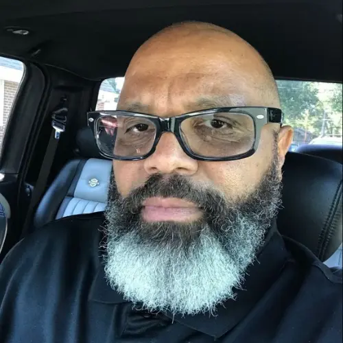
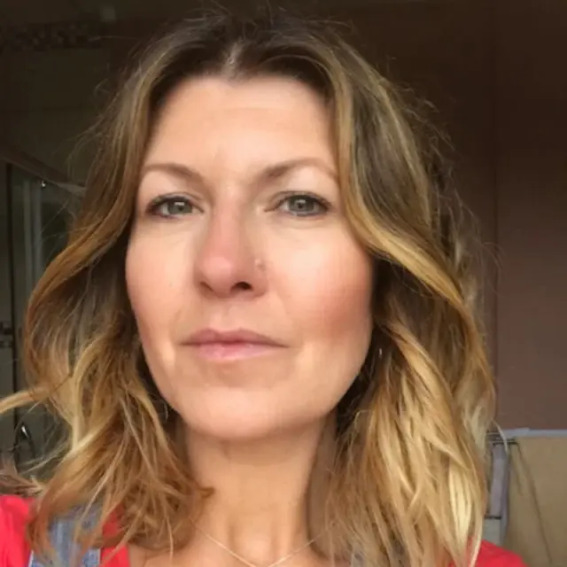
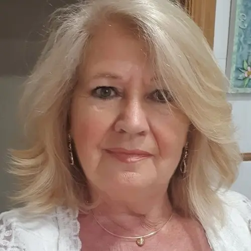
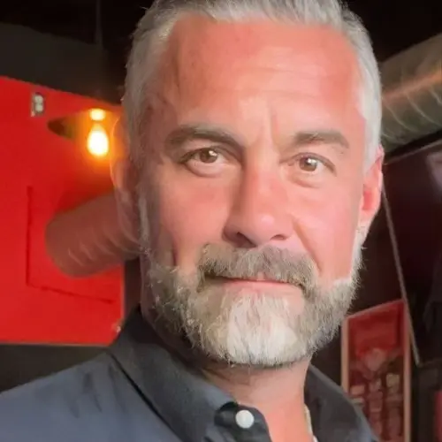

Depois de ler o manuscrito sagrado, minha vida deu uma guinada que parecia impossível. Minhas dívidas foram quitadas de formas inesperadas, e hoje vivo uma abundância que nunca imaginei. São Miguel Arcanjo tem sido meu protetor em todas as batalhas.
ResponderCurtirSeguir3 min
Juliana de Almeida
Não sabia como superar as dificuldades financeiras que me sufocavam, mas ao estudar as palavras do manuscrito, senti uma paz imensa e em pouco tempo, as soluções começaram a surgir. Tenho certeza de que São Miguel me guiou para esse conhecimento ancestral.
ResponderCurtirSeguir4 min
Fátima do Rosário
Eu estava no fundo do poço, mas esse manuscrito sagrado mudou tudo. Em menos de um mês, consegui quitar dívidas, reorganizar minha vida e, finalmente, senti uma sensação de propósito. As orações contidas nele são poderosas!
ResponderCurtirSeguir5 min

Rodrigo Carvalho
Acordei de um sonho com São Miguel Arcanjo e, naquele mesmo dia, descobri o manuscrito. Desde que comecei a seguir seus ensinamentos, uma oportunidade incrível surgiu no trabalho. Tudo flui com tanta naturalidade que só posso agradecer.
ResponderCurtirSeguir10 min

Maria dos Santos
Não tenho palavras para descrever o que senti ao ler o manuscrito sagrado. Meu negócio, que estava à beira da falência, agora prospera como nunca antes. Sinto que minha vida foi abençoada de maneira sobrenatural através dessas palavras divinas.
ResponderCurtirSeguir16 min

Lourdes Lima
Sim Maria, depois que li o manuscrito minha vida mudou. Sonhei com números e ganhei 2mil reais quando joguei na loto, nem acreditei. As revelações contidas nele são reais!
ResponderCurtir14 min
Maria dos Santos
Que ótimo Lourdes, muita sorte para nós!!
ResponderCurtir10 min
Gabriela Carvalho
O mais surpreendente foi a forma como tudo mudou rapidamente. Ao seguir os rituais de cura descritos no manuscrito, me reconectei com meu propósito de vida e alcancei metas que antes pareciam impossíveis. Minha gratidão é imensa.
ResponderCurtirSeguir35 min

Fernando da Silva
Sempre trabalhei duro, mas nunca saía do lugar. Após aplicar os ensinamentos do manuscrito sagrado, oportunidades começaram a aparecer e, pela primeira vez, consegui poupar dinheiro e realizar sonhos antigos. A sabedoria ancestral realmente funciona!
ResponderCurtirSeguir52 min
Ana Paula Ferreira
O manuscrito trouxe cura não apenas financeira, mas espiritual também. Minha saúde melhorou, meu relacionamento com a família se restaurou e consegui sair das dívidas. É como se uma força divina tivesse entrado na minha vida.
ResponderCurtirSeguir1 h
Carlos Henrique
Estava desempregado há meses quando encontrei o manuscrito. Segui as orações de prosperidade descritas nele e em 2 semanas recebi 3 propostas de emprego. Hoje estou em uma posição melhor do que nunca imaginei. Gratidão eterna!
9 de 149 Comentários